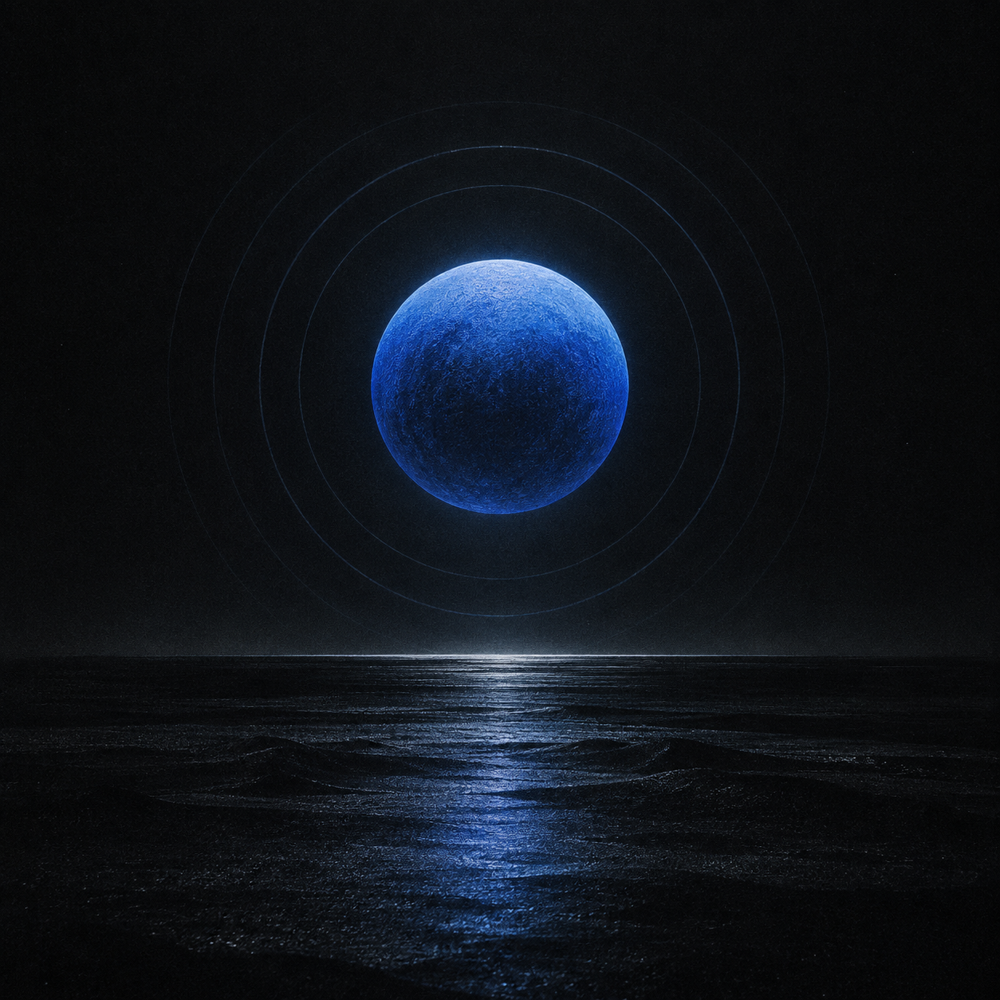

Seattle, US
Live
Now tuned
KEXP 90.3
Human-curated music from Seattle. Independent, adventurous, and always live.
Visit broadcaster
Ready when you are
Live broadcast
72
Explore the dial
Signals for every hour.
Independent voices, focus music, and global news—streaming live.
No signals match this view.